Staff Médico
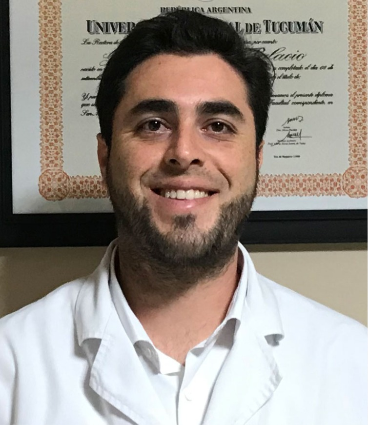
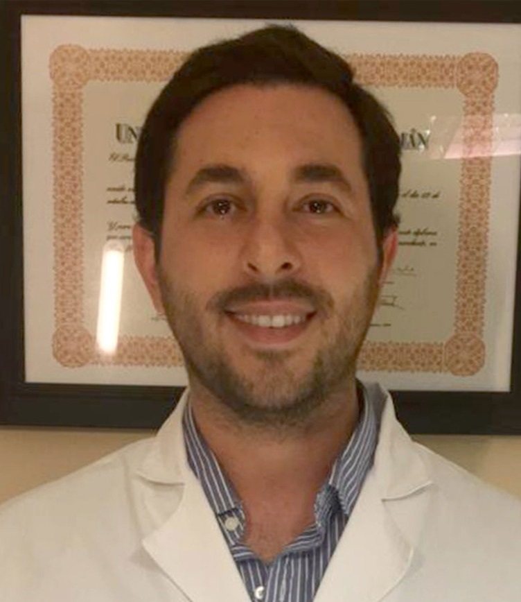
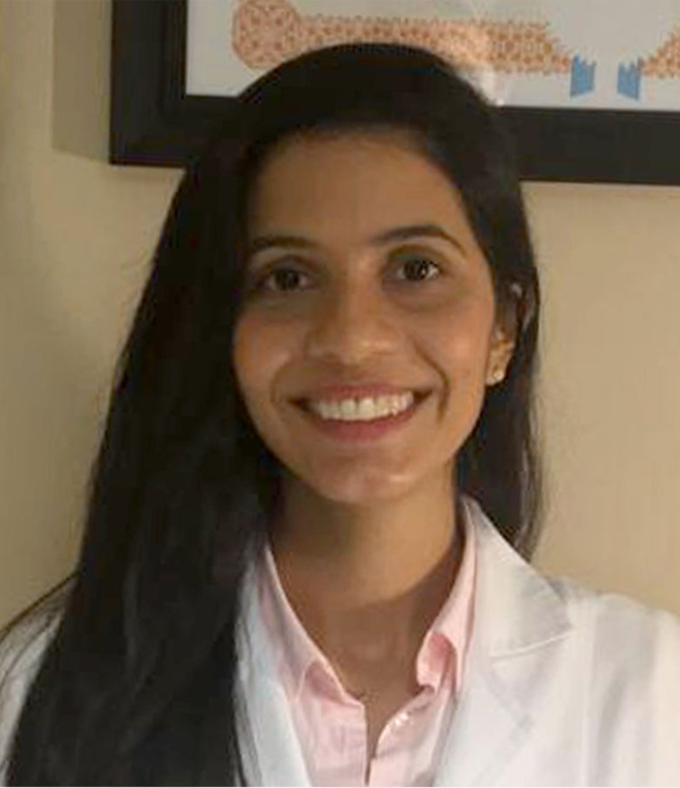
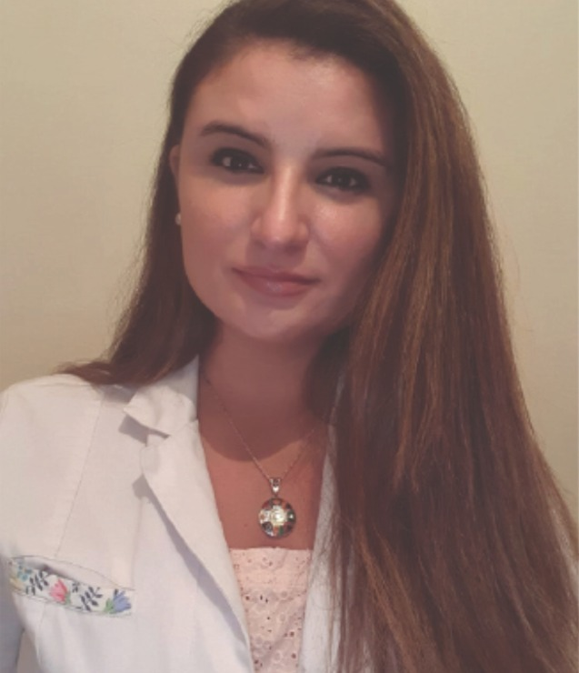
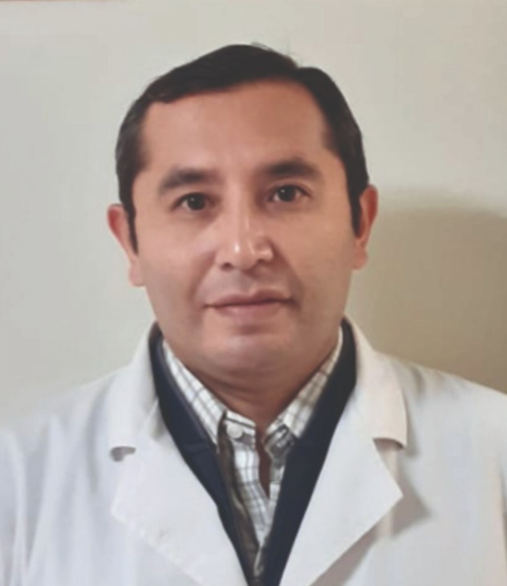
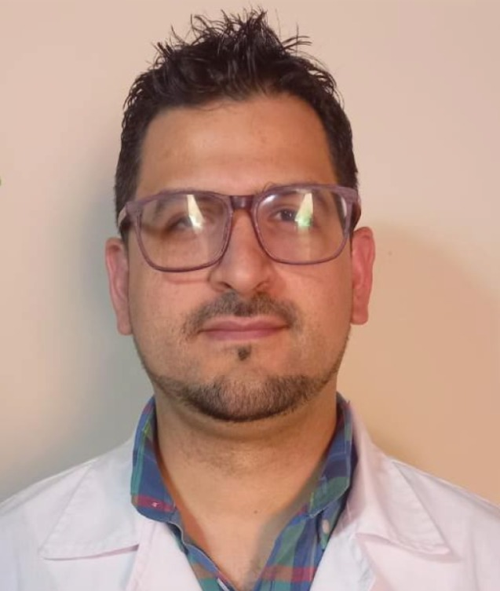
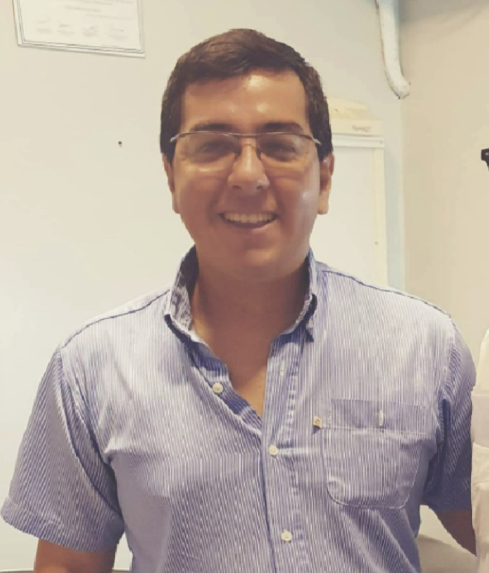
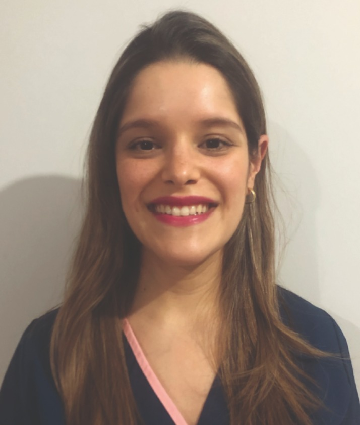
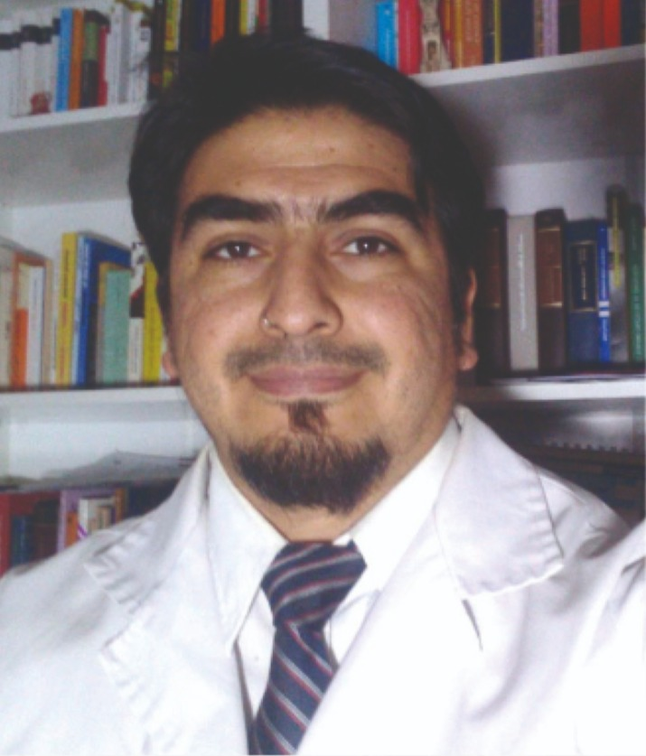
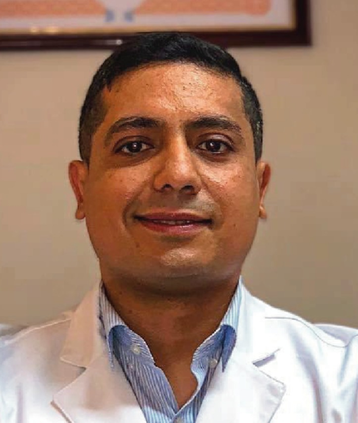
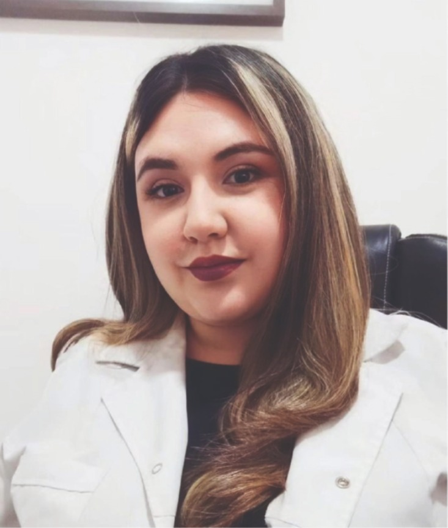
CMP nace con el propósito de ofrecer atención médica de alto nivel, respaldada por profesionales especializados y tecnología moderna.
Ofrecemos una amplia gama de servicios médicos para cuidar tu salud y la de tu familia
Más de 20 profesionales y tecnología moderna para brindarte el mejor cuidado.
Especialistas
Pacientes atendidos
De experiencia











Sacá tu turno online en 5 pasos simples
Reservá tu turno ahora y accedé a atención médica de calidad
Sacar turno ahora →